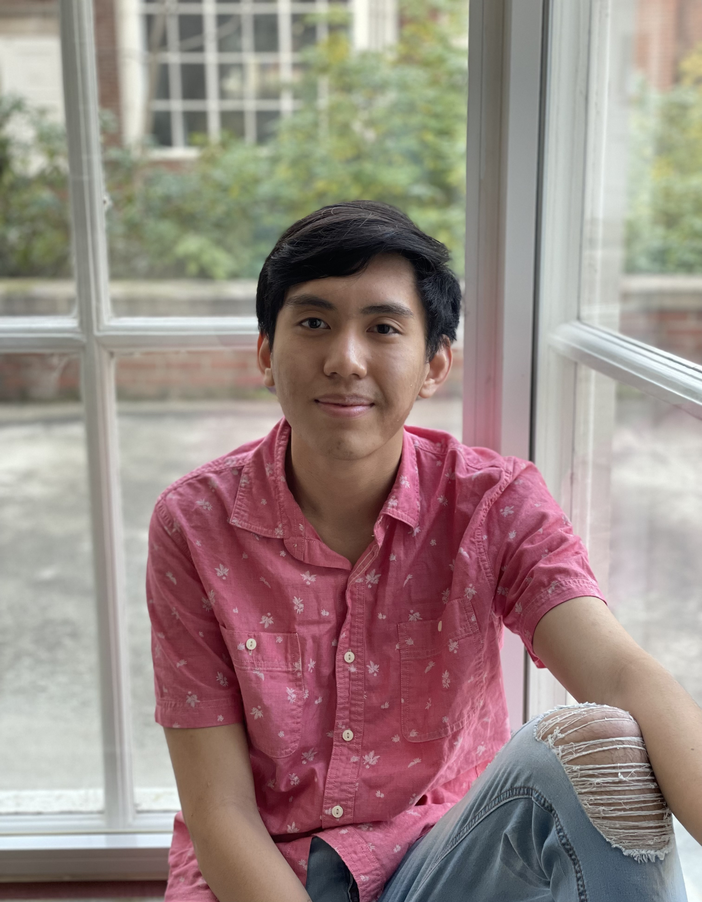

Hi, I'm James
Here's a little bit about me:
I grew up in Las Vegas, Nevada, where I lived up until my adulthood life. I went to Silverado High School and
graduated top of my class with Advanced Honors. I later moved to Corvallis that summer to attend Oregon State University to study
chemical engineering.
During my freshman year, I lived in Cauthorn Hall and I worked my first job there as a food-service worker at West Dining
Center for the University Housing and Dining Center. As an out-of-state student, I faced a challenge very similar to many college students: not having enough to afford college. Even moreso, I was paying out-of-pocket
for college all by myself with no help from family or loans. When I first arrived in Oregon, I had less than two-hundred dollars and so I worked full-time to make ends meet while taking a full time course load of credits Linn Benton Community College.
When COVID-19 emerged and the nation went into lockdown, a lot of my problems exacerbated. Like many others, I lost my job, my friends and family, and lastly my home. I spent that pandemic housing and food insecure meet while still attending classes virtually from various coffee shops (that's how I became addicted to DutchBros!).
I won't lie and say that me coming to Oregon State knowingly without any funds to make it through the school year was not impuslve, and that their weren't many late nights ruminating whether I needed to drop out,
but during that time I found my inner resolve to pull myself out of that situation and come out stronger than I ever was before.
Through various outreach, support from friends and advisors, and hard work for financial independence and obtaining scholarships, I am happy to say that I am now fully self-funded for my undergraduate education.
I honestly didn't think I would be able to afford and survive my freshman year of college when I first came here. Now I am going into my senior year of college and applying for graduate school.
Isn't that a funny thing?
My sophomore year of college, I found my passion for two things: climbing and chemistry. I have always had an enjoyment and interest learning about chemistry and I had succeeded in chemistry in high school. I was originally in bioengineering my freshman year before switching to chemical engineering. During my freshman
year I would tutor my roommates and friends in their chemistry courses. That year, I was offered three amazing opportunities in education: becoming a Resident Assistant for Hawley-Buxton,
a Learning Assistant for calculus, and a Teaching Assistant for general chemistry. In the engineering dorm, most
engineering students are required to take calculus and chemistry and so I was graced with the opportunity to not only
help instruct in the classroom, but outside of class as well with my residents. I constructed worksheets, formed study
groups, and encouraged my residents to succeed in their studies, specifically chemistry. I realized that most students in engineering had to take some capacity in chemistry and so I realized the importance of having
resources for chemistry. As a TA for chemistry, I regularly interacted with chemistry professors, graduate students and faculty. Their work inspired to try out research within the inorganics department. From their, my perspective
on research and chemistry changed forever, and I have since been deeply involved in it. I have since joined 3 research groups within material science/chemistry and have joined the Honors College to
be more involved in research.
I still am involved in teaching, as a teaching assistant and learning assistant, and I am now the Honors College Chemistry tutor. With all this, and my time is residential education as a Resident Assistant,
I am sure of one thing: what keeps me moving each day is the ability to learn about chemistry and reach out to people meaningfully through education and mentorship.
That is why my next step is to attend graduate school to learn as much as I can about chemical engineering and materials and to continue teaching in academia as a professor.
To learn more about my motivations, take a look at my Statement of Purpose
Over here is a short article on me from the Honors College at Oregon State University
For more about me, check out some of these fun photos
Hobbies: Learning Chemistry, Drawing, Playing the Flute, Hanging out at DutchBros, Getting getting coffee/lunch/dinner with friends, Volleyball, Rock Climbing
secret message: I like coconuts